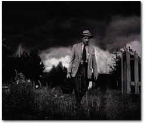

名前はアーネスト・セリアーニ。何でも屋というのは、内科から始まって精神科や歯科までのあらゆる分野の知識を身に付けた上で治療に携わらなければならないからだ。彼の診療は朝8時から始めて、夜中に終わるというのは特に珍しいことではなかった。それだけ忙しくても、報酬は都会の専門医よりも安かった。
しかしセリアーニにとってそれに変わるものが田舎町にはあった。患者や隣人たちから必要とされていること。地域社会で高い社会的地位を得ていること。そしてうるさい上司がいないからすべてを自分の判断でできるという対価があること。
1948年ユージン・スミスは『ライフ』誌からコロラド州の小さな町の医師を撮影する依頼をうけた。彼はセリアーニに会ってすぐに意気投合し、密着取材と撮影が始まった。
ユージン・スミスは第二次世界大戦後、責任と高い道徳性を備えた慎重で正確なジャーナリズムにのっとり、複数の写真を使って自分の考えを表現するフォト・エッセイという手段を、より深化させようと考えていた。しかし彼がどう主張してもライフ誌は与えられたテーマの写真だけを撮るのが写真家で、記事にするのが編集者という考えを変えなかった。だから彼はいつも衝突した。彼のフォト・エッセイの考え方は記事の内容を書くことから写真のセレクト・レイアウトまで、伝えたいことが正確に伝わるようにすべてにおいて彼が責任を負う方法だった。やっとのことで彼が勝ち取り“穏やかで力強い手法と確固たるヒューマニズム”その独自の手法を貫いて出来上がったのが、この「カントリー・ドクター」である。
私が説明するより写真家の確かなテキストからのいくつか紹介してみようと思う。
リー・マリー・ホウイートリー。馬に頭を蹴られた2歳半の彼女の頭がい骨の骨折箇所を調べ額の大きな傷は縫合した。セリアーニはできるだけの手当はしたけれど、彼ができることはここまでである。彼女の潰れた左の目を救ってやることはできない。彼はそのことを両親になんと伝えたらいいのか言葉を探した。
82歳になるジョー・ジェスマー老人が真夜中、心臓発作をおこし死にかけていた。意識はあったけれど痛みからか彼は憑かれたように助けを求めていた。セリアーニは牧師に病院まで来てくれるように頼んだ。

彼の口癖は「自分の職業は言葉や写真によって単なる記録以上のことをなすことである」。まさに彼の写真は記録以上のものになった。
セリアーニの手術を終えた後の疲れ切った眼差しを、私は忘れられない。そこには一人の善良な人間の献身と、町に一人しかいない医師の劣悪な労働条件が見て取れた。「カントリー・ドクター」の一連の写真は英語がわからなくてもそうやって忘れがたいものになった。

「カントリー・ドクター」にはまだオチがある。『ライフ』誌は1936年に創刊されてから一時休刊となった。しかし1987年に誕生50年を記念して“LIFE 50 YEARS”という本が出版された。それには『ライフ』誌の50年間に及ぶレポートの集大成が載っている。ユージン・スミスが亡くなって9年が経っていたけれど、その中に彼が取材してから39年後のクレムリンの町のカラー写真がある。白髪のセリアーニが写っている。町のみんなが彼を中心に囲んで記念写真に収まっている。そこには彼が病気や怪我を直した人も、赤ん坊としてとりあげた人も、知り合いの孫も大勢が一緒になって写っているのだろう。写真の中で老人になったセリアーニは、もう当時のように疲れていたり必死な形相などはなく幸せそうに笑っている。